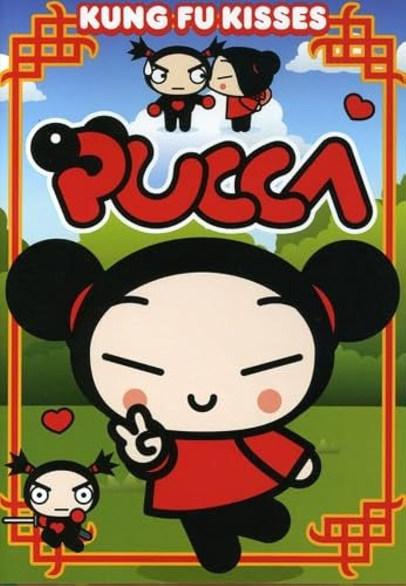
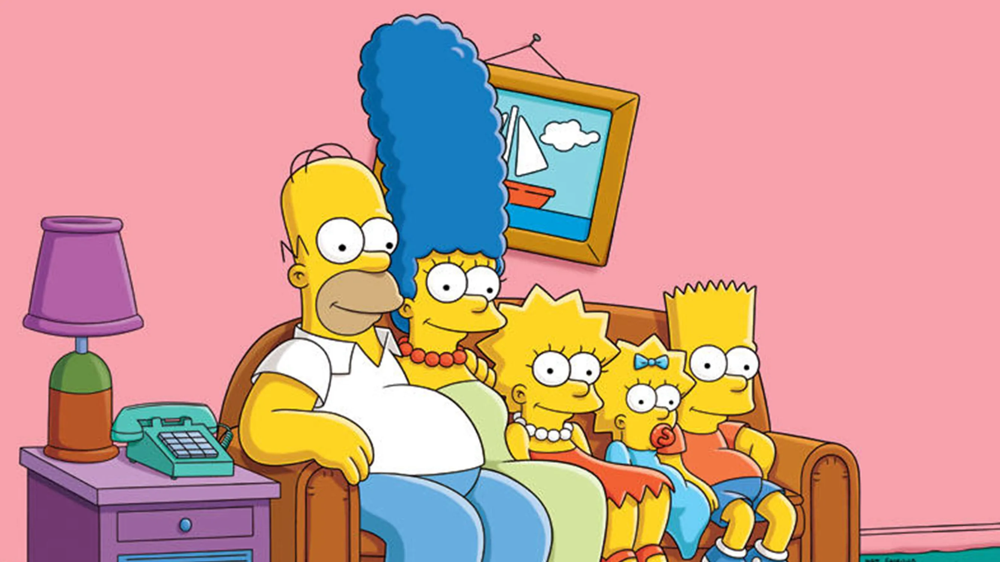
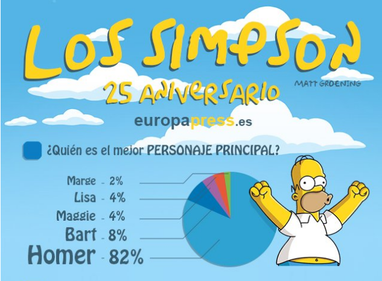
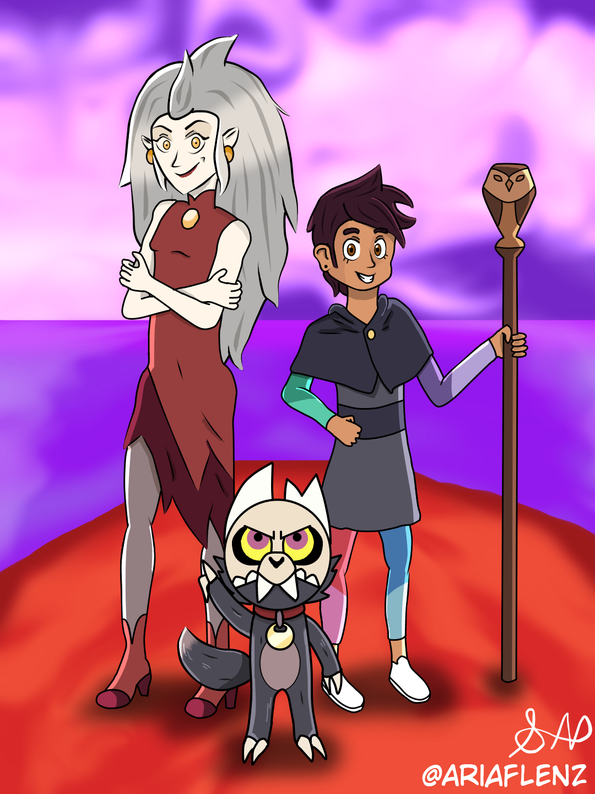
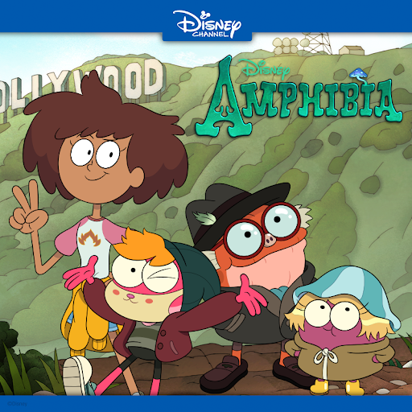

Los dibujos animados son una forma de entretenimiento fascinante y atemporal que ha capturado la imaginación de personas de todas las edades y culturas. Desde las clásicas caricaturas que evocan nostalgia hasta las emocionantes series animadas llenas de aventuras, el mundo de la animación ofrece una amplia gama de historias y personajes que nos hacen reír, llorar y reflexionar.
En nuestro sitio web, te invitamos a explorar este emocionante universo de dibujos animados. Sumérgete en la rica historia de la animación, desde los pioneros del arte hasta las últimas innovaciones tecnológicas que han transformado el medio. Descubre las caricaturas más queridas por generaciones enteras, así como las nuevas creaciones que están redefiniendo los límites de la narrativa animada.
Ya sea que busques una dosis de nostalgia con tus caricaturas clásicas favoritas o estés interesado en descubrir las últimas tendencias en animación, nuestro sitio web es tu puerta de entrada al apasionante mundo de los dibujos animados. ¡Bienvenido y disfruta del viaje!
Caricaturas Populares
Pucca: Una Caricatura Popular

Pucca es una caricatura cómica y divertida que sigue las aventuras de una niña enamorada de un repartidor de comida llamado Garu. Fue popular entre las niñas en la década de 2010.
A pesar de su aparente simplicidad, Pucca aborda temas como la amistad, la lealtad y el amor, mientras sigue las divertidas travesuras de sus personajes. Con un estilo de animación único y un humor encantador, Pucca se ha ganado el corazón de su audiencia en todo el mundo.
A continuación, puedes ver una parte de un episodio de pucca en dos maneras:
Pucca: El mejor cumpleaños (Subtitulado)
Pucca: El mejor cumpleaños (Audio descriptivo)
Los Simpson

Los Simpson es una popular serie de animación satírica que sigue las aventuras de la familia Simpson en la ciudad ficticia de Springfield. Desde su estreno en 1989, se ha convertido en una de las caricaturas más icónicas y longevas de la televisión.
La serie es conocida por su sátira social y su humor inteligente, abordando una amplia gama de temas contemporáneos y políticos. Ha ganado numerosos premios y ha sido aclamada tanto por la crítica como por el público.
Con más de 30 temporadas y cientos de episodios, Los Simpson continúa siendo una fuerza cultural, influenciando la comedia y la televisión en general.

Top 5 Caricaturas Más Populares
Nombre
Año de Estreno
Género
Los Simpson
1989
Comedia, Satírica
Bob Esponja
1999
Comedia, Aventura
Rick y Morty
2013
Ciencia Ficción, Comedia
South Park
1997
Comedia, Satírica
Adventure Time
2010
Aventura, Fantasía
Nuevos Lanzamientos
The Owl House

The Owl House es una serie de fantasía y aventuras que sigue a Luz, una adolescente humana que se encuentra accidentalmente en el mundo demoníaco. Allí conoce a Eda, una bruja rebelde, y a King, un pequeño demonio con grandes ambiciones.
La serie combina elementos de magia, misterio y humor para crear una experiencia única. Con personajes entrañables y una narrativa emocionante, The Owl House se ha convertido rápidamente en una de las favoritas de la audiencia.
Amphibia

Amphibia es una serie de aventuras y comedia que sigue a Anne, una chica que termina atrapada en un mundo habitado por anfibios parlantes. Allí conoce a sus nuevos amigos y juntos deben enfrentar diversas aventuras.
Con su estilo visual único y su humor encantador, Amphibia ha cautivado a la audiencia desde su estreno. La serie explora temas de amistad, valentía y aceptación mientras sigue las emocionantes hazañas de Anne y sus amigos en un mundo lleno de sorpresas.